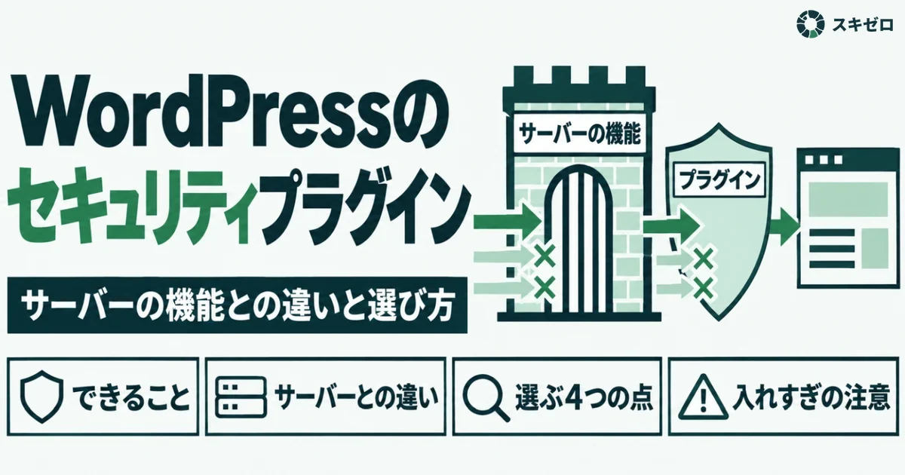
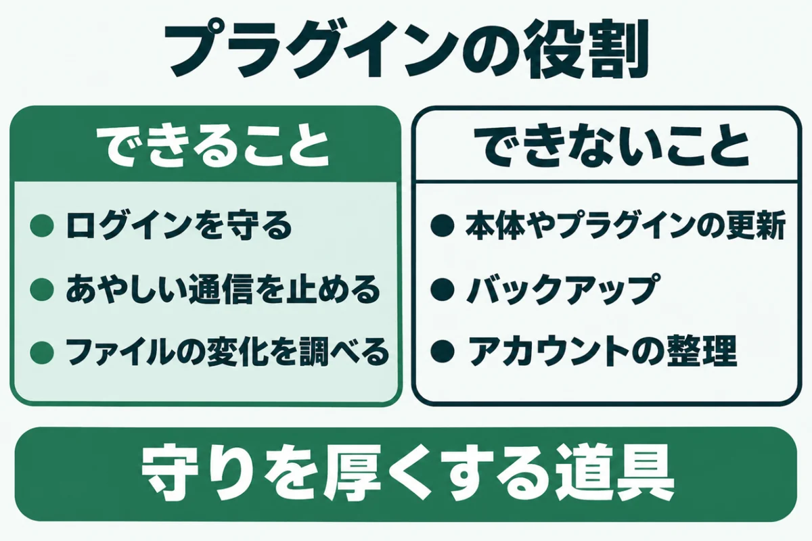
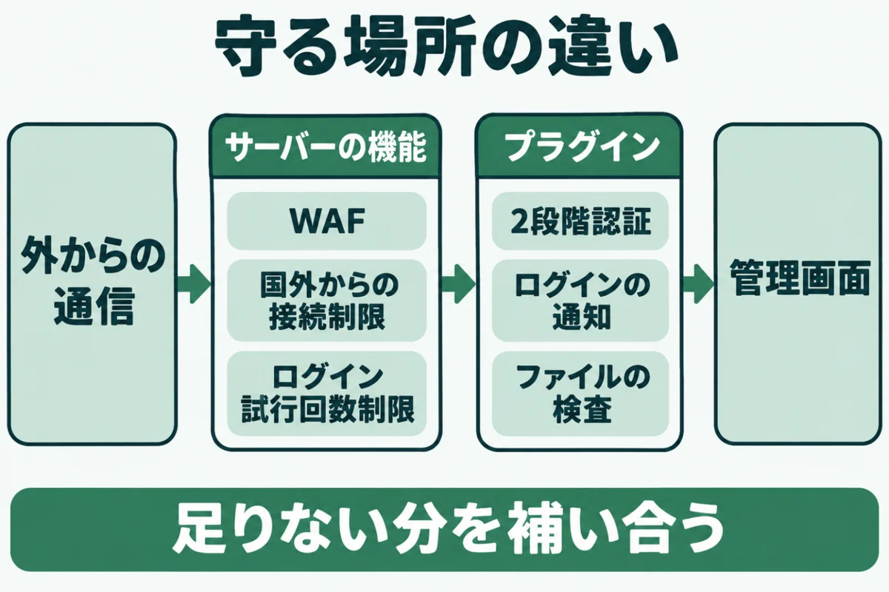
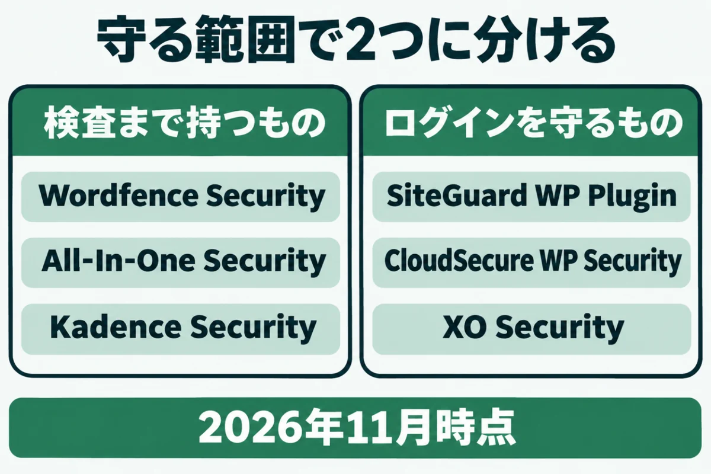
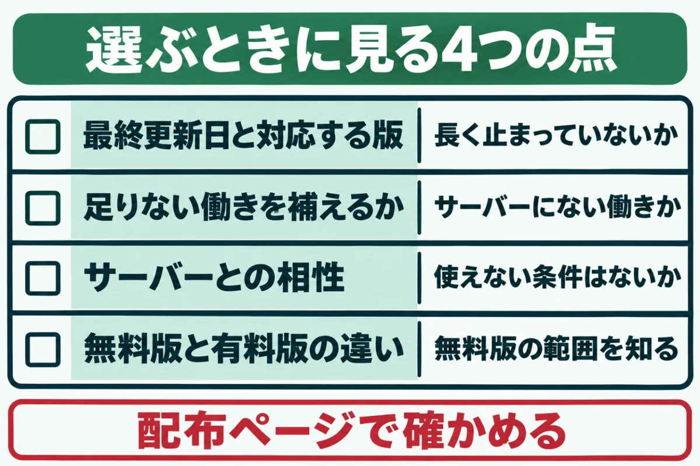
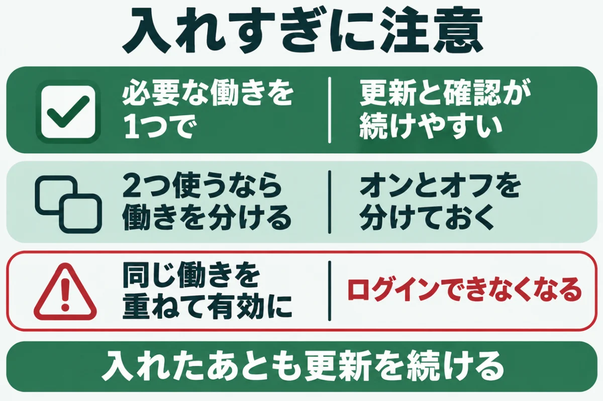

WordPressのセキュリティプラグインは必要？サーバーの機能との違いと選び方

WordPressのセキュリティプラグイン、種類が多くて選べずにいませんか？
入れれば安心なのか、サーバーの機能と何が違うのかも気になるところです。いくつも入れてよいのかも、迷いやすい点でしょう。
この記事では、セキュリティプラグインがしてくれることと、してくれないことを最初に整理しました。サーバー側の機能との役割分担、選ぶときに見る点、入れすぎの注意まで順に紹介します。
内容は、WordPressの公式ドキュメントと、各プラグインの配布ページをもとにしました。配布ページの数字は、2026年11月25日に確かめたものです。おすすめの順位づけはしていません。
WordPressのセキュリティプラグインは必要？できることとできないこと

WordPressのセキュリティプラグインは、守りを厚くする道具で、安全の保証ではありません。入れておけば何もしなくてよい、という道具ではないのです。
必要かどうかは、サイトにどの守りが足りていないかで決まります。まず、できることとできないことを分けて見ていきましょう。サーバー側の機能で足りている部分があれば、重ねて入れる必要はありません。
ログイン・通信・ファイルの3つを守る
セキュリティプラグインの働きは、大きく3つに分けられます。1つ目は、ログインの失敗の回数を制限したり、2段階認証を足したりするログインの保護です。2つ目は、あやしい通信をサイトの入口で止めるファイアウォールになります。3つ目は、ファイルの書き換えや不正なプログラムを探す検査です。プラグインごとに、持っている働きは違います。ログインだけを守るものもあれば、3つとも持つものもあるのです。配布ページの説明で、どの働きがあるかを先に確かめましょう。
更新とバックアップの代わりにはならない
WordPress公式の手引きは、安全対策を「危険をなくすのではなく減らすこと」としています。プラグインの配布ページにも、すべての攻撃を止められるわけではないと書くものがあるのです。更新とバックアップは、別に続ける必要があります。使っていないアカウントの整理も、プラグイン任せにはできない仕事です。運営者の自社サイト15件の点検では、心当たりのない編集者のアカウントが2つ見つかりました。こうした見落としは、人の目で確かめるしかないでしょう。
- 参考：Hardening WordPress｜WordPress Developer Resources
- 参考：All-In-One Security (AIOS)｜WordPress.org 日本語
WordPressのセキュリティプラグインとサーバー側の機能の違い

WordPressのセキュリティプラグインとサーバー側の機能は、守る場所が違います。役割を分けて、足りない部分を補い合う使い方が基本です。どちらか一方があれば足りる、という関係ではありません。
サーバー側の機能は、通信がWordPressに届く前に働きます。プラグインは、サイトの中に入れて働かせる道具です。先にサーバーの設定を確かめ、足りない部分をプラグインで補う順番にしましょう。
サーバーの機能は、WordPressの手前で止める
WordPress公式の手引きは、ファイアウォールを働く場所で分けて説明しています。プラグイン、サーバーに置くWAF、サーバーの手前に置く外部のサービスの3つです。エックスサーバーのWAFは、サーバーの段階であやしい通信を検知して拒否します。プラグインより手前で止めるのが、サーバーの機能です。ただし公式のマニュアルは、最低限の予防策だとしています。手順は、エックスサーバーのWAF設定のやり方と注意点｜6つの項目と誤検知の直し方にまとめました。
サーバーの機能で足りている守りを確かめる
エックスサーバーには、WAFのほかに「WordPressセキュリティ設定」があります。ログインの失敗が続くと接続を制限する、ログイン試行回数制限がその1つです。国外からの管理画面やREST APIへの接続を制限する設定もあります。運営者の自社サイトを、2026年11月に国外の回線から開いてみました。xmlrpc.phpと/wp-json/は403で、トップページは200でした。同じ守りをプラグインで重ねる必要は薄いでしょう。ほかのサーバーでも、公式のマニュアルで標準の機能を確かめてください。
プラグインで補うのは、WordPressの中の守り
サーバーの機能が届きにくいのは、WordPressの中で起きることです。たとえば、ログインに2段階認証を足す働きは、プラグインが受け持ちます。ログインがあったことをメールで知らせる働きや、ログインの履歴の記録も同じです。ファイルが書き換わったことを知らせる検査も、プラグインの得意な部分になります。サーバーにない働きだけを、プラグインで足すと考えましょう。2段階認証の手順は、次の記事で紹介しています。WordPressのログインに2段階認証を設定する方法｜プラグイン選びと締め出されない準備です。
WordPressの主なセキュリティプラグインの比較（2026年11月時点）

WordPressのセキュリティプラグインは数が多いので、配布ページの数字と説明を並べて比べます。取り上げるのは、WordPress.orgで配布されている6つです。
表の数字は、2026年11月25日に配布ページで確かめました。並びは有効インストール数の多い順で、おすすめの順ではありません。6つとも配布が続いていて、この1年のうちに更新されています。自社のサイトに足りない働きを持つものを探す材料にしてください。
| プラグイン | 有効インストール数 | 最終更新日（協定世界時） | 必要なWordPress | 必要なPHP | 配布ページにある主な機能 |
|---|---|---|---|---|---|
| Wordfence Security | 500万以上 | 2026年11月10日 | 4.7以上 | 7.0以上 | ファイアウォール、マルウェアの検査、ログイン試行の制限、2段階認証 |
| All-In-One Security (AIOS) | 100万以上 | 2026年11月18日 | 5.3以上 | 7.4以上 | ログイン試行の制限、2段階認証、ファイアウォール、ファイルの変更の検知 |
| Kadence Security（以前のSolid Security） | 70万以上 | 2026年11月24日 | 6.5以上 | 7.4以上 | 2段階認証、パスワードの決まり、総当たりの防止、ファイルの変更の検知 |
| SiteGuard WP Plugin | 60万以上 | 2026年11月11日 | 6.0以上 | 記載なし | ログインページ変更、画像認証、ログインロック、管理ページアクセス制限 |
| CloudSecure WP Security | 20万以上 | 2026年11月13日 | 5.3.15以上 | 7.1以上 | ログイン無効化、ログインURL変更、2段階認証、シンプルWAF |
| XO Security | 3万以上 | 2026年7月19日 | 6.0以上 | 7.2以上 | ログイン試行の制限、CAPTCHA（画像認証）、ログインページの変更、2段階認証 |
- 参考：Wordfence Security｜WordPress.org 日本語
- 参考：All-In-One Security (AIOS)｜WordPress.org 日本語
- 参考：Kadence Security｜WordPress.org 日本語
- 参考：SiteGuard WP Plugin｜WordPress.org 日本語
- 参考：CloudSecure WP Security｜WordPress.org 日本語
- 参考：XO Security｜WordPress.org 日本語
ファイアウォールや検査まで持つもの
表の上の3つは、守る範囲が広い作りです。ファイアウォールや、ファイルの変化を調べる検査まで持っています。Kadence Securityは、以前のSolid Securityが名前を変えたものです。働きが多いぶん、設定する項目も増えます。Wordfence Securityの検査には、ファイルを配布元のものと比べる働きがあるのです。All-In-One Securityは、ふだんと違うファイルの変更を知らせると説明しています。使う働きを絞って、少しずつ有効にするのが無難でしょう。
ログインと管理画面を守るもの
表の下の3つは、ログインまわりの守りが中心です。配布ページには、ログインの失敗の回数制限、画像認証、ログインページの変更などが並びます。ログインの守りを足したいときの候補になるでしょう。2段階認証は、3つのうち2つの配布ページに載っています。CloudSecure WP Securityは、「シンプルWAF」も持つ作りです。XO Securityの最終更新は2026年7月で、6つの中ではいちばん前でした。対応するWordPressの版も、あわせて見ておきましょう。
WordPressのセキュリティプラグインを選ぶときに見る4つの点

WordPressのセキュリティプラグインを選ぶときは、人気より先に、自社に合うかを確かめます。インストール数が多いことは、合うことの証明にはなりません。
見る点は、更新の状況、足りない働き、サーバーとの相性、無料版の範囲の4つです。どれも、配布ページと開発元の公式サイトで確かめられます。1つずつ見ていきましょう。
① 最終更新日と、対応する版を見る
配布ページには、最終更新日と、必要なWordPressやPHPの版が書かれています。「検証済み最新バージョン」は、開発元が動きを確かめたWordPressの版です。長く更新がないものは、弱点の修正も届きません。自社のWordPressとPHPの版が、必要な版を満たしているかも見てください。更新履歴を開くと、どのくらいの間隔で直されているかが分かります。配布が止まったプラグインの扱いは、WordPressの使っていないプラグインは削除すべき？判断の基準と安全な消し方で紹介しました。
② 足りない働きを補えるかを見る
先に、サーバーの機能で足りている守りを書き出します。そのうえで、足りない働きを持つプラグインを探す順番です。ログインの回数制限がサーバーにあるなら、同じ働きのために入れる必要は薄いでしょう。2段階認証やログインの通知が欲しいなら、その働きがあるかを配布ページで確かめます。働きの多さではなく、必要な働きで選ぶのがこつです。使わない働きは、有効にしないままで構いません。働きごとにオンとオフを切り替えられるかも見ておきましょう。
③ サーバーとの相性と、使えない条件を見る
セキュリティプラグインには、動く条件が細かく決まっているものがあるのです。SiteGuard WP Pluginは、マルチサイトに対応していません。CloudSecure WP Securityは、Apacheで動作を確認したとしています。XO Securityは、.htaccessに書き込まない作りだと説明しているのです。自社のサーバーの種類と使い方に合うかを確かめてください。分からないときは、サーバー会社か制作会社に聞くのが早いでしょう。入れてから気づくより、先に条件を読むほうが手間は少なく済みます。
④ 無料版と有料版の違いを見る
多くのセキュリティプラグインには、無料版と有料版があります。違いは、公式の説明で確かめましょう。Wordfence Securityの無料版は、新しいルールが30日遅れで届きます。不正なプログラムを見分ける情報も、同じく30日遅れです。All-In-One Securityでは、マルウェアの検査や国ごとの遮断が有料版に入ります。無料版で何が守られないかを、先に知っておくことが大切です。料金は変わることがあるので、申し込む前に公式サイトで確かめてください。
WordPressのセキュリティプラグインの入れすぎと設定の注意

WordPressのセキュリティプラグインは、たくさん入れるほど安全になるわけではありません。同じ働きが重なると、かえって不具合の元になります。
設定を誤ると、管理者自身がログインできなくなることもあるのです。プラグインである以上、それ自体の更新も欠かせません。入れる前と入れたあとに気をつける点を、3つに分けて紹介します。
同じ働きを2つのプラグインで重ねない
同じ働きを持つプラグインを2つ有効にすると、動きがぶつかることがあります。分かりやすい例が、ログインページのURLを変える機能です。SiteGuard WP Pluginの配布ページは、この機能の併用はできないとしています。両方を使うと、ログインのURLが2つ残ったり、ログインページが開かなくなったりするのです。同じ働きは、1つのプラグインだけで有効にします。2つ入れる場合は、働きが重ならないようにオンとオフを分けてください。
締め出されない準備をしてから有効にする
ログインのURLの変更や接続元の制限は、設定を誤ると自分も入れなくなります。有効にする前に、ファイルとデータベースのバックアップを取ってください。Kadence Securityの配布ページも、入れる前のバックアップを強く勧めています。変更したログインのURLは、複数の担当者で控えておきましょう。働きは1つずつ有効にして、動きを確かめます。別のブラウザーでログインし直せるかを見てから、次の働きに進む形です。入れなくなったときの戻し方も、配布元の説明で先に読んでおいてください。
セキュリティプラグイン自身も更新し続ける
セキュリティプラグインも、プラグインの1つです。Patchstackによると、2025年のWordPress関連の新しい弱点は11,334件でした。その91%は、プラグインにあったとされています。この記事で比べた6つのうち少なくとも4つの更新履歴にも、自身の弱点を直した記録が残っているのです。入れたあとも、最新の版に保つことが欠かせません。公表後の動き方は、WordPressのプラグインに脆弱性が見つかったときの対処法にまとめました。
URLを入れるだけで、WordPress本体やプラグイン、セキュリティ設定など8項目を無料で判定します。足りない守りを詳しく知りたい場合は、詳細診断（29,800円・税込）もご利用ください。
無料で診断するWordPressのセキュリティプラグインに関するよくある質問
セキュリティプラグインを入れれば、ほかの対策はいりませんか？
いいえ、ほかの対策も必要です。プラグインは守りを厚くする道具で、すべての攻撃を止めるものではありません。配布ページに、すべての攻撃は止められないと書くプラグインもあるのです。本体・テーマ・プラグインの更新と、バックアップは別に続けてください。強いパスワードと、使っていないアカウントの整理も欠かせない基本になります。プラグインは、その土台の上に足すものと考えましょう。
セキュリティプラグインは、いくつも入れてよいですか？
数に決まりはありませんが、同じ働きを重ねるのは避けてください。ログインページの変更のように、2つで有効にすると不具合が出る機能があります。入れるなら、働きが重ならないように役割を分けましょう。プラグインが増えるほど、更新と確認の手間も増えます。まずは1つで足りるかを考えるのが無難です。すでに複数入っているなら、重なる働きがないかを見直してください。
無料版だけでも役に立ちますか？
役に立つ場面は多くあります。この記事の表には、配布ページで有料の印がない機能を載せました。ただし、無料版と有料版で届く情報の早さや、検査の範囲が違うことがあります。たとえばWordfence Securityの無料版は、新しいルールが30日遅れで届く決まりです。違いは配布ページと公式サイトで確かめ、必要になったら有料版を考えましょう。
エックスサーバーを使っています。プラグインは入れなくてもよいですか？
サーバーの機能で足りている守りは、重ねて入れなくて構いません。エックスサーバーには、WAFやログイン試行回数制限、国外からの接続の制限があります。一方で、WordPressのログインの2段階認証は、この設定の一覧にはない働きです。こうした働きが欲しいときに、プラグインで足すと考えてください。先に、サーバーパネルで今の設定がオンかどうかを確かめましょう。
自分で設定するのが不安なときは、どこに相談すればよいですか？
サイトを作った制作会社か、保守を頼んでいる会社に相談するのが近道です。相談の目安は、ログインできなくなったときや、設定のあとに表示やフォームが崩れたときになります。改ざんや不正なログインの疑いがあるときも、設定を触る前に専門家へ連絡してください。入れる前なら、今のサイトにどの守りが足りないかを見てもらうとよいでしょう。サーバー会社のサポートに、標準の機能を聞くのも有効です。
まとめ
WordPressのセキュリティプラグインは、守りを厚くする道具です。ログインの保護、ファイアウォール、検査の3つが主な働きになります。更新やバックアップの代わりにはなりません。サーバー側の機能とは守る場所が違うので、役割を分けて使います。
選ぶときは、サーバーにない働きを、更新が続くもので補うのが基本です。同じ働きを重ねず、入れたあとも最新の版に保ちましょう。
まずは、今の状態を知るところから。
URLを入れるだけで、数十秒で判定が出ます。登録はいりません。